伪泰坦傀儡 · 已接入运行工程
2026-11-05 · 全敌军战斗经验最终上限180 · 没有更新手机安装
本次生效内容
F25「潮狩军港」新部署新增1只，第19列第10行。旧战斗保持原编成，新开战／重试启用；首领、神教箱、牢门和原目标保留。只在第二章投放。
| 等级／生命 | 力量／技巧／速度／幸运 | 基础双防／移动 |
|---|---|---|
| 5／42 | 12／5／1／0 | 4／2／4 |
重臂锤击：1格物理、合计威力14、负重0、命中基础80、武器必杀0。核心16耐久、独立双防3／2；有效时本体双防14／12，被直接攻击后固定反伤2HP，未命中及致命攻击也触发。攻击核心无反伤、无溢出；破坏立即去除本体防护与反伤。完整／破损的待机、左右交替行走、跑近锤击、闪烁、倒地、撤离及状态头像均已接入。
机械傀儡经验×1.5后再统一封顶180；基础价值70，等级5价值98，实际经验按友方职业与等级计算。每满100逐级成长并保留余数：80＋180 → 升2级、剩余60。仅剩机械傀儡时移动4→7，沿合法路径撤离到最近可达边缘，无击败经验，不阻挡胜利。
验证结果与范围
逻辑88项、经验回归1745项、实际控制器／界面106项、像素与静态114项、HTML经验5项通过；水猴既有59项、濒死流程256项检查通过。
实际游戏状态、控制器和受控战斗参数；覆盖核心破坏、魔防、未命中反伤、双亡、主角失败、MAP、存档／重试、撤离及连续升级。截图通过不抢焦点的后台防护和离屏视口生成。未进行整关自然通关、手机安装或真机试玩。
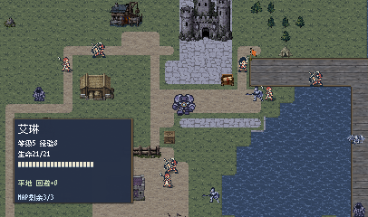
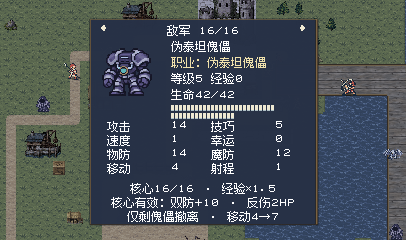
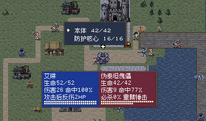
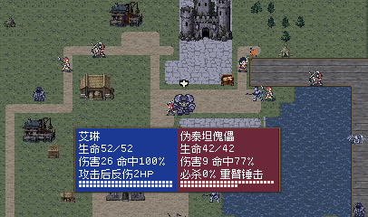
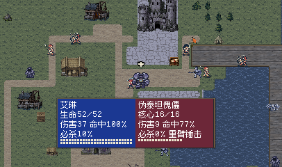
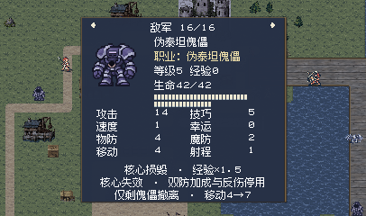
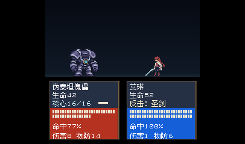
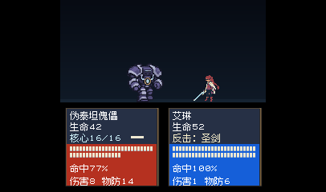
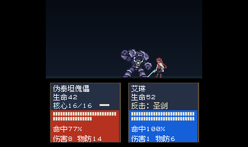
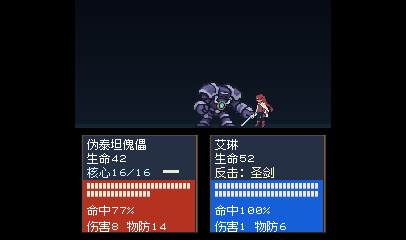
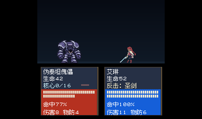
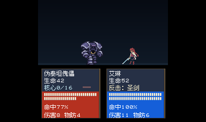
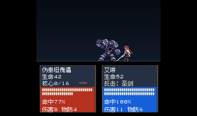
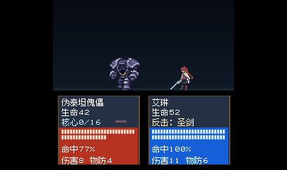
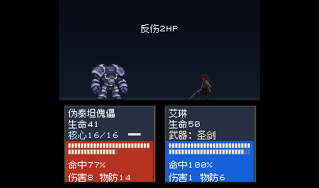
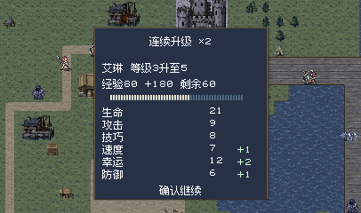
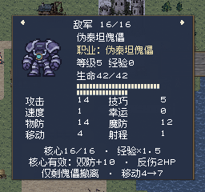
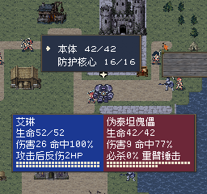
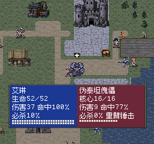
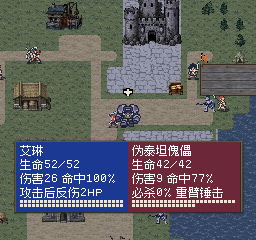
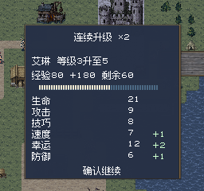
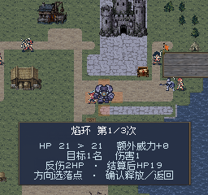
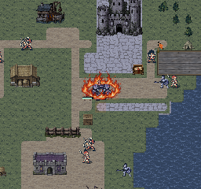
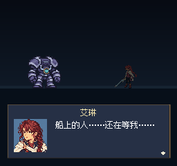
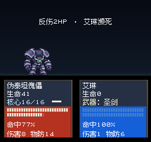